UDN
Search public documentation:
ExampleParticleSystemsKR
English Translation
日本語訳
Interested in the Unreal Engine?
Visit the Unreal Technology site.
Looking for jobs and company info?
Check out the Epic games site.
Questions about support via UDN?
Contact the UDN Staff
日本語訳
Interested in the Unreal Engine?
Visit the Unreal Technology site.
Looking for jobs and company info?
Check out the Epic games site.
Questions about support via UDN?
Contact the UDN Staff
입자 시스템의 예
문서 요약: UDN 빌드에서 이용할 수 있는 새 Particle System Editor(입자 시스템 에디터)를 사용하여 작성한 몇 가지 에미터의 예를 소개합니다. 문서 변경 내역: 2226 빌드로의 맵 업데이트를 위해 Jason Lentz (DemiurgeStudios?)가 최종 업데이트. 원저자: Chris Linder, Tom Lin, 그리고 Albert Reed (DemiurgeStudios?).비지원 선언
이 문서에 소개된 코드는 UDN 또는 그밖의 라이센스 사용자들을 위한 서비스로서 제공된 것입니다. 이것은 Epic에 의해 지원되지 않습니다.서론
많은 분들이 처음 시작하기에 좋은 입자 시스템의 예에 대해 요청하셨습니다. 저희는 입자 시스템 에디터 를 사용하여, 여러분의 프로젝트에서 출발점으로 삼을 수 있는 완제품 수준의 작은 라이브러리를 만들었습니다. 텍스처 팩, 메쉬 팩 그리고 소스 파일 외에도 여기 소개하는 많은 예들에는 "어떻게 해냈는가"에 대한 자세한 설명이 포함되어 있습니다. 이것이 호평을 얻게 된다면 더 많은 예들을 보탤 생각입니다. 요청이 있으시면 al@demiurgestudios.com으로 보내 주십시오.에미터의 예
이 예제들은 모두 다운로드 할 수 있습니다.Spell Ring (마법의 고리)
제작: Tom Lin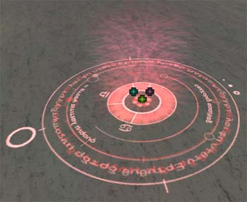
아마도 UT의 입자 효과에서 가장 신나는 것은, 옛날식 입자의 개념에는 참으로 맞지 않는 넓은 범위의 사물들에 걸쳐 그 효과가 미칠 수 있다는 점일 것입니다. 그 좋은 예가 여기 소개하는 마법의 고리입니다. 이 마법의 고리는 3개의 에미터로 만들어졌습니다. 이 시스템을 위한 대부분의 작업은 사실상 이미지 편집 프로그램을 사용해서 이루어졌습니다. 먼저, 저는 Photoshop 에서 접지판에 사용된 2개의 이미지 맵을 만들었습니다. 아래의 그림은 고리 중의 하나가 그 자체로 어떻게 보이는지를 나타냅니다: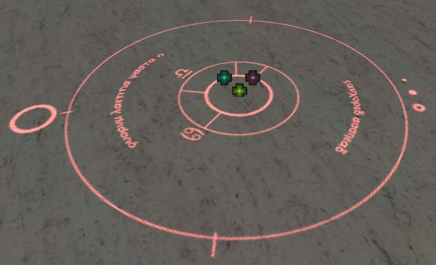
바깥 고리는 단 1개의 수명이 긴 입자로 만들어진 것입니다. 여기서는 에디터의 옵션을 많이 사용할 필요가 없습니다. 사이즈는 불변으로 남아 있으며, 움직임 등은 없습니다. 그러나 회전은 중요합니다. 어떤 회전에 대해서이든 `Spin Particles(입자 스핀하기)' 박스가 반드시 체크되어야 합니다. 이것이 첫 단계입니다. 초당 스핀의 수는 매우 낮게 설정됐습니다. 이 고리에 대해서는 0.01 이하면 충분합니다. 또 한가지 중요한 것은 스핀 CCW 또는 CW 슬라이더입니다 –이것은 한 방향에서 스핀하는 시간의 백분율을 결정합니다- 즉, 이것이 75%이면 75%의 시간 동안 시계 방향으로 스핀하고 나머지 25%의 시간은 시계 반대 방향으로 스핀합니다. 이 고리에서 저는 이것을 0%로 설정했습니다. 끝으로 'Specified Normal(지정된 노멀)'은 향하는 방향에 대한 옵션으로, Z가 1.0으로 설정되었습니다. 두 번째 고리는, 스핀 방향을 제외하면 기본적으로 첫 번째 고리와 같은 설정입니다. 안쪽 고리는 100% 시계 방향으로 설정되어, 고리들이 항상 서로 반대 방향으로 스핀하게 됩니다. 제가 Photoshop에서 고리들의 크기를 알맞게 조정해 놓았으므로, 에디터 내로 임포트 되었을 때 크기를 기본값으로 설정하면 고리들이 서로 멋지게 맞을 것입니다. 시스템의 마지막 부분은 위를 향해 움직이고 시간에 따라 차차 희미해지는, 간단한 방사성으로 증감하는 텍스처입니다. 시각적인 흥미를 더하기 위해, 두 번재 고리를 여러 번 복제하여 일정한 간격으로 스폰되도록 설정했습니다. 마지막으로 두 개의 고리에 모두 색상 조정을 적용하여 시간이 지남에 따라 빨강색으로 바뀌게 했습니다.Bubbles(거품)
제작: Tom Lin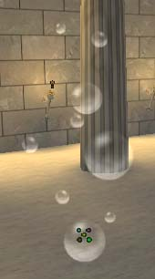
입자 시스템으로 거품을 만드는 것은 아주 쉽습니다. 거품에 대해 생각하면서 저는 파이널 판타지 스타일의, 고통받는 캐릭터에게서 끊임없이 나오는 거품인 ’독이 든’ 시약의 재창조를 시도했습니다. 이것들은 비누 거품, 수중 호흡장치로부터 솟아나오는 거품, 늪의 개스 등을 흉내내기 위해 쉽사리 응용할 수 있습니다. 저는 처음에 단 하나의 스프라이트 에미터로 시작하고, 여러 개의 거픔들이 표면 전체에 아무렇게나 배열된 텍스처를 사용했습니다. 그러나 이것이 이 입자에 대해 빈약한 솔루션이라는 것이 곧 분명해졌습니다 – 거품들이 ‘튀어 오르면’ 큰 그룹이 한 번에 사라져 버립니다. 이 때문에, 텍스처를 맵 당 한 개의 거품으로 제한하고, 입자의 수를 이에 맞도록 조정하는 것이 좋습니다. 먼저 저는 한 개의 커다란 거품으로 시작했습니다. 뻔한 패턴을 방지하기 위해 최대 입자수를 낮게 유지했습니다. 반투명 그리기 스타일을 사용했지만 불투명도를 100%로 유지했습니다. 페이드인 시간을 적게 하여 초기 유입을 제거하는데 도움이 되게 했지만, 페이드 아웃 시간을 주지 않아 거품의 튀어오름으로 인한 갑작스런 사라짐이 없게 했습니다. 거품이 튀어오르는 것에 대해서는 나중에 더 설명하겠습니다. 거품은 물론 모션의 크기를 다양하게 하십시오. 시작 위치를 변경하는 것은 선택적으로, 이는 여러분의 사용 의도에 달려 있습니다. 거품 막대로부터 거품을 불어 날리는 것이 거품 욕조보다는 훨씬 더 국부적인 시작 지역을 가지게 되는 것은 당연합니다. 첫 번째 거품을 끝마치면, 다양함을 위해 에미터들을 몇 개 더 추가하는 것은 간단한 일입니다. 에미터가 많을수록 거품에 대해 더 나은 콘트롤을 가질 수 있지만, 여기에는 주의해야할 작은 성능 히트 문제가 있습니다. 자, 이제 거품이 튀어오르는 문제로 돌아갑니다. 도전을 느끼신다면 주의를 기울이십시오. 거품이 튀어 오를 때 그저 사라져 버리게 하는 것도 괜찮지만, Subdivisions (텍스처 지역 아래의)를 사용하여 튀어오르는 거품에 약간의 캐릭터를 추가할 수 있습니다. 저의 거품은 텍스처에 완전 거품과 튀어오르는 거품, 두 부분을 가지고 있습니다. 저는 U 구획을 2로, V 구획은 1로 설정했습니다.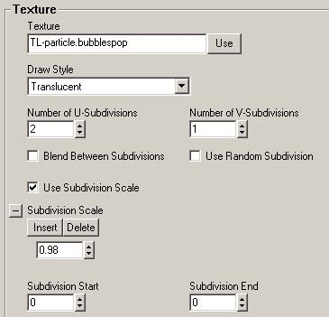
이는 텍스처를 왼편과 오른 편, 2개의 작은 구획으로 나눕니다. `Use Subdivision Scale(구획 척도 사용)' 버튼을 체크함으로써, 텍스처의 왼 쪽 절반이 오른 쪽 절반으로 바뀌기 전에 보이는 시간을 제어할 수 있습니다. 이 경우, 저는 이것을 .98 (왼쪽 절반이 수명의 98%를 차지함)로 했습니다. `Blend Between Subdivisions(구획간 블렌드)' 박스는 체크하지 않은 상태로 두었습니다-저는 텍스처의 한 쪽 절반이 다른 쪽으로 차츰 넘어가지 않고 빠르게 도약하도록 하고 싶었습니다.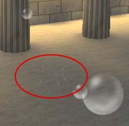
Dirt Explosion(흙 폭발)
제작: Tom Lin 이것은 아주 간단한 입자 컨셉입니다: 지면에 수류탄을 덩지면 꽝 하고 폭발합니다. 좀 더 구체적으로 말하면, 저는 땅이(바위와 흙) 갈라지는 것을 흉내내고 메쉬 에미터로 시스템에 약간의 시각적 흥미로움을 더하고 싶었습니다. 이 시스템에는 많은 부분들이 있지만, 복잡한 것은 매우 적습니다. 이 입자 시스템에는 도합 105개의 입자가 있습니다. 이것은 대단한 양은 아니지만, 이런 일이 한 번에 한두번 이상 발생하게 하는 것은 그다지 좋은 생각이 아닐 것입니다. 이처럼 좀 큰 시스템을 만들 때는, 항상 한 번에 몇 개가 사용되는지를 염두에 두어 엔진이 느려지는 것을 방지하십시오.
이 시스템을 단계별로 살펴보겠습니다. 우선, 제가 목표로 한 일반적인 형태는 처음에는 멀리서 보면 시스템이 거친 원뿔 모양으로 보이게 하는, 넓은 밑바닥을 가진 기둥이었습니다. 기둥의 중심부는 맨처음 흙이 공중으로 폭발하는 것을 시뮬레이트하고, 넓은 바닥 부분은 옆쪽으로 더 많이 내던져지는 처음의 입자들과 시스템 수명의 후폭발에서 흐뜨러지는 입자들을 처리합니다. 저는 또한 폭발할 때 좀 더 큰 바위 덩어리들이 사방으로 바깥 쪽을 향해 던져지는 것을 원했습니다.
기둥 모양의 중심부는 2개의 스프라이트 에미터로 만들어졌습니다. 처음 것은 간단한 바위 텍스처이고, 두번째 것은 간단한 연기 텍스처입니다. 바위 텍스처는 작게 유지됐습니다. 이것은 공중으로 던져지고, 땅에 떨어진 잠시 후에 충돌과 함께 튀어오를 것이기 때문에, 텍스처의 평면 성질이 너무 두드러지지 않는 것이 중요합니다. 이 두 에미터들은 모두 거의 모든 면에서 매우 표준적입니다 – 서로 다른 회전, 척도, 위치 및 속도를 추가하여 시각적 규칙성을 깨뜨리십시오. 여기서 언급할 만한 가치가 있는 유일한 필드는Movement의 값들입니다. 입자가 원을 형성하면서 바깥쪽으로 이동하게 하려면, X와 Y의 Start Velocity(시작 속도)를 연결, 반영되도록 합니다. Start Velocity의 Z Max 값이 유별나게 높은 것과 Z의 마이너스 Acceleration(가속도)을 주목해 보십시오. 이것은 바위와 흙 입자가 아주 빠른 속도로 공중으로 던져졌다가 밑으로 떨어지는 것처럼 보이게 하기 위해서입니다.
이것은 아주 간단한 입자 컨셉입니다: 지면에 수류탄을 덩지면 꽝 하고 폭발합니다. 좀 더 구체적으로 말하면, 저는 땅이(바위와 흙) 갈라지는 것을 흉내내고 메쉬 에미터로 시스템에 약간의 시각적 흥미로움을 더하고 싶었습니다. 이 시스템에는 많은 부분들이 있지만, 복잡한 것은 매우 적습니다. 이 입자 시스템에는 도합 105개의 입자가 있습니다. 이것은 대단한 양은 아니지만, 이런 일이 한 번에 한두번 이상 발생하게 하는 것은 그다지 좋은 생각이 아닐 것입니다. 이처럼 좀 큰 시스템을 만들 때는, 항상 한 번에 몇 개가 사용되는지를 염두에 두어 엔진이 느려지는 것을 방지하십시오.
이 시스템을 단계별로 살펴보겠습니다. 우선, 제가 목표로 한 일반적인 형태는 처음에는 멀리서 보면 시스템이 거친 원뿔 모양으로 보이게 하는, 넓은 밑바닥을 가진 기둥이었습니다. 기둥의 중심부는 맨처음 흙이 공중으로 폭발하는 것을 시뮬레이트하고, 넓은 바닥 부분은 옆쪽으로 더 많이 내던져지는 처음의 입자들과 시스템 수명의 후폭발에서 흐뜨러지는 입자들을 처리합니다. 저는 또한 폭발할 때 좀 더 큰 바위 덩어리들이 사방으로 바깥 쪽을 향해 던져지는 것을 원했습니다.
기둥 모양의 중심부는 2개의 스프라이트 에미터로 만들어졌습니다. 처음 것은 간단한 바위 텍스처이고, 두번째 것은 간단한 연기 텍스처입니다. 바위 텍스처는 작게 유지됐습니다. 이것은 공중으로 던져지고, 땅에 떨어진 잠시 후에 충돌과 함께 튀어오를 것이기 때문에, 텍스처의 평면 성질이 너무 두드러지지 않는 것이 중요합니다. 이 두 에미터들은 모두 거의 모든 면에서 매우 표준적입니다 – 서로 다른 회전, 척도, 위치 및 속도를 추가하여 시각적 규칙성을 깨뜨리십시오. 여기서 언급할 만한 가치가 있는 유일한 필드는Movement의 값들입니다. 입자가 원을 형성하면서 바깥쪽으로 이동하게 하려면, X와 Y의 Start Velocity(시작 속도)를 연결, 반영되도록 합니다. Start Velocity의 Z Max 값이 유별나게 높은 것과 Z의 마이너스 Acceleration(가속도)을 주목해 보십시오. 이것은 바위와 흙 입자가 아주 빠른 속도로 공중으로 던져졌다가 밑으로 떨어지는 것처럼 보이게 하기 위해서입니다.
 낮게, 넓게 퍼져있는 파편은 기둥과 비슷합니다. 이것도 바위와 연기 텍스처로 만들어졌습니다. 바위 텍스처가 조금 더 견고합니다. 이는 공중으로 별로 높이 던져지지 않기 대문에, 던져진 바위의 입자들은 좀 더 크고 더 많이 떼를 이룹니다. 연기 텍스처는기둥에서 사용된 것과 같습니다. 여기서도, 표준 변경자를 적용합니다. 이 바위 텍스처는 중력을 가지고 있지만, 충돌은 가지고 있지 않습니다. 연기는 그 수명이 끝나감에 따라 일정한 속도로 증가하여 분산을 시뮬레이트합니다. 먼지구름을 흉내내기 위해서는 중력이 적용되지 않습니다.
이 시스템에서 재미있는 부분은 메쉬 에미터입니다. 저는 먼저 3D Studio에서 낮은 폴리의 작은 메쉬를 만들어 이를 텍스처했습니다. 바위 텍스처를 확실하게 텍스처 팩의 어딘가에 넣도록 하십시오. 그렇지 않으면 에디터는 베이스 텍스처를 대신 사용합니다. 저는 모션의 Start Velocity를 원기둥형 입자와 비슷한 식으로 설정했습니다- X와 Y를 연결하고 이 값들을 반영했습니다.`Size' 탭 아래서, 저는 상당히 넓은 범위의 min 과 max 값을 설정하여, 여러가지 형태와 크기의 바위를 얻을 수 있도록 했습니다. 끝으로, 약간의 트릭을 사용했습니다: 바위들이 부자연스럽게 튀어나오는 대신 차차 사라지도록 한 것입니다. 먼저 `Mesh' 탭에서, `Use Particle Color(입자 색상 사용)' 박스를 체크했습니다. 그리고 다시 `Color/Fading' 탭에서, 적절한 Fading 값을 설정했습니다. 바위들이 차차 사라지기 전에 땅위에 잠깐 머물도록 했습니다. 마지막으로, 반드시 충돌이 유효화되어 있어야 합니다. 결국 이것이 텍스처 대신 메쉬를 사용하는 이유입니다.
낮게, 넓게 퍼져있는 파편은 기둥과 비슷합니다. 이것도 바위와 연기 텍스처로 만들어졌습니다. 바위 텍스처가 조금 더 견고합니다. 이는 공중으로 별로 높이 던져지지 않기 대문에, 던져진 바위의 입자들은 좀 더 크고 더 많이 떼를 이룹니다. 연기 텍스처는기둥에서 사용된 것과 같습니다. 여기서도, 표준 변경자를 적용합니다. 이 바위 텍스처는 중력을 가지고 있지만, 충돌은 가지고 있지 않습니다. 연기는 그 수명이 끝나감에 따라 일정한 속도로 증가하여 분산을 시뮬레이트합니다. 먼지구름을 흉내내기 위해서는 중력이 적용되지 않습니다.
이 시스템에서 재미있는 부분은 메쉬 에미터입니다. 저는 먼저 3D Studio에서 낮은 폴리의 작은 메쉬를 만들어 이를 텍스처했습니다. 바위 텍스처를 확실하게 텍스처 팩의 어딘가에 넣도록 하십시오. 그렇지 않으면 에디터는 베이스 텍스처를 대신 사용합니다. 저는 모션의 Start Velocity를 원기둥형 입자와 비슷한 식으로 설정했습니다- X와 Y를 연결하고 이 값들을 반영했습니다.`Size' 탭 아래서, 저는 상당히 넓은 범위의 min 과 max 값을 설정하여, 여러가지 형태와 크기의 바위를 얻을 수 있도록 했습니다. 끝으로, 약간의 트릭을 사용했습니다: 바위들이 부자연스럽게 튀어나오는 대신 차차 사라지도록 한 것입니다. 먼저 `Mesh' 탭에서, `Use Particle Color(입자 색상 사용)' 박스를 체크했습니다. 그리고 다시 `Color/Fading' 탭에서, 적절한 Fading 값을 설정했습니다. 바위들이 차차 사라지기 전에 땅위에 잠깐 머물도록 했습니다. 마지막으로, 반드시 충돌이 유효화되어 있어야 합니다. 결국 이것이 텍스처 대신 메쉬를 사용하는 이유입니다.
Arc Welding(아크 용접)
제작: Tom Lin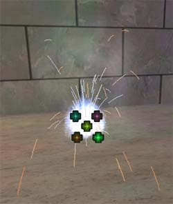
아크 용접은 스프라이트와 불꽃 에미터의 결합을 실험하기에 훌륭한 입자 시스템입니다. 중심부의 스프라이트로 시작하여, 저는 주 아크 라이트의 빠른 깜박임을 에디터 전체에 흩어져 있는 여러 필드로 시뮬레이트 했습니다. 더 많은 깜박임 효과를 창출하기 위해, `General' 탭 밑에 비교적 낮게 설정된 여러 개의 입자를 두었습니다. 초당 입자의 수를 높게 설정한 반면, `Time' 탭 아래에서 입자의 수명을 아주 낮게 설정했습니다. 그 결과 입자가 1초에도 여러번씩 연속해서 스폰하고 소멸합니다. 지나친 반복을 피하기 위해 입자의 수명, 크기 및 위치에는 범위를 지정했습니다. 그 다음에는 2개의 서로 다른 에미터로 연기/안개 효과를 만들었습니다. 하나는 단순한 움직임과 페이드를 가지며, 그 외에 다른 것은 별로 없습니다. 또 하나는 더 복잡합니다. 용접 과정에서 생성된 연기에 불빛이 번쩍이는 것을 시뮬레이트 하기 위해, 저는 연기 텍스처 맵에 Subdivision 스케일을 사용했습니다. 여기에는 2개의 U와 2개의 V 구획이 있으며, 이 넷 사이에서 고르게 블렌드합니다. 입자의 수명은 9초 정도로 높게 설정했습니다. 시간상으로 가깝게 스폰되도록 설정된 2개의 입자를 사용했습니다. 여기가 까다로운 부분입니다.`Texture' 탭 아래에서 draw style이 translucent로 설정되어야 합니다. Color Scale(`Color/Fading' 탭 아래)에 저는 11개의 컬러 포인트를 가지고 있습니다. 대부분이 검정색 사이에 흰색이 끼어있고 양 끝에는 검정색 막대가 있습니다. Color Scale Repeats (색상 척도 반복)또한 매우 높게 설정되었습니다. 이것은 에미터의 투명도를 완전 투명에서 완전 가시적으로, 그리고 다시 그 반대로 매우 빠르게 바꾸면서 깜박이는 불빛을 흉내냅니다. 즉시 시작할 수 있도록, 두 에미터는 모두 높은 초당 warmup 시간과 warmup 틱을 가지고 있습니다.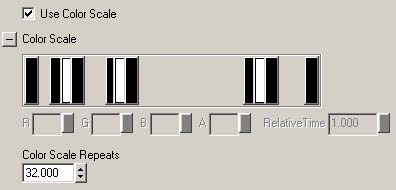
이제 불꽃 차례입니다. 저는 적당히 많은, 40개 정도의 입자를 설정했습니다. 입자용의 텍스처는 1픽셀 폭의 선이기 때문에 큰 요인이 아닙니다. 가장 중요한 것은 입자들이 그 위에 투명한 비트를 가지지 않도록 하는 것입니다. 물론 여러분이 원한다면 가지게 해도 좋습니다. 저는 이것을 완전히 흰색으로 설정하고, 시간이 지남에 따라 색상이 바뀌게 하기 위해 Color Scale(색상 척도)에서 이를 입자에 추가했습니다. 움직임은 불꽃 에미터에서 첫번째로 중요한 섹션입니다. 이것은 용접 환경을 작성하는 것이기 때문에, 저는 불꽃이 사방에서 생성되도록 하고 싶었습니다. 이 효과를 얻기 위해서는 start velocity에서 X와 Y 값을 연결한 다음 이 값들을 반영하면 됩니다. 그러면 필드에 입력한 값이 적절하게 반영됩니다 (예를 들면, X min -122, X max 122, Y min -122, Y max 122). 불꽃이 공중으로 던져지도록 하기 위해 (아래로 떨어져 용접 표면 내로 달라붙는 대신), 저는 X의 최대 및 최소 값이 항상 양수가 되도록 설정했습니다. 최소값을 55로 하고, 최대값은 훨씬 큰 440으로 하여, 여러 입자들이 위로 향해 움직이는데 충분한 범위를 가지도록 했습니다. 끝으로, 입자가 아래로 구부러지게 하기 위해, Z의 Acceleration을 큰 음수값으로 했습니다 . 상식적으로 생각할 때, 불꽃에서 시간은 중요한 부분입니다. 저의 입자들은 그다지 오래 존속하지 않지만, 수명의 범위가 다양합니다. 입자들이 위를 향하도록 생성되기 때문에, 중간 쯤에서 불꽃들이 서로 뭉쳐지는 경향이 있지만, 상당수가 가속도로 인해 아래로 끌어 내려지기 이전에 소멸합니다. 그 다음 입자들이 더 스폰되어 그 자리를 채웁니다.
마지막으로 Spark 탭 자체입니다. Line Segment Range(선분 범위)가 모든 것을 처리해주지는 않습니다- UDN은 이전에 5를 바람직한 수로 권장했습니다. 저는 이것을 3으로 했지만, 큰 차이는 없었습니다. 조각간의 시간이 중요한 점입니다- 수치가 낮을수록 선이 더 매끄러워집니다. 이 수치를 낮게 하십시오. 원하는 효과가 나타날 때까지 여러 수치를 시도해 보십시오. 저는 이 값을 아주 아주 낮게, 이 필드에서 0.05 이하로 했습니다.
상식적으로 생각할 때, 불꽃에서 시간은 중요한 부분입니다. 저의 입자들은 그다지 오래 존속하지 않지만, 수명의 범위가 다양합니다. 입자들이 위를 향하도록 생성되기 때문에, 중간 쯤에서 불꽃들이 서로 뭉쳐지는 경향이 있지만, 상당수가 가속도로 인해 아래로 끌어 내려지기 이전에 소멸합니다. 그 다음 입자들이 더 스폰되어 그 자리를 채웁니다.
마지막으로 Spark 탭 자체입니다. Line Segment Range(선분 범위)가 모든 것을 처리해주지는 않습니다- UDN은 이전에 5를 바람직한 수로 권장했습니다. 저는 이것을 3으로 했지만, 큰 차이는 없었습니다. 조각간의 시간이 중요한 점입니다- 수치가 낮을수록 선이 더 매끄러워집니다. 이 수치를 낮게 하십시오. 원하는 효과가 나타날 때까지 여러 수치를 시도해 보십시오. 저는 이 값을 아주 아주 낮게, 이 필드에서 0.05 이하로 했습니다.
Impact Explosion (충격 폭발)
제작: Chris Linder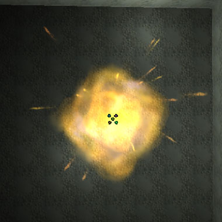
폭발 만들기The Making of an Explosion
저는 단지 20개 정도의 입자를 사용하고 텍스처 메모리는 별로 많이 사용하지 않는, 간단한 충격 폭발 만들기에 착수했습니다. 이러한 종류의 폭발은 로켓 폭발에서부터 검들이 서로 부딪치는 것에 이르기까지 사용될 수 있습니다. 이 입자 시스템의 주요한 결점은, 주 폭발이 약간의 방위가 지정된 스프라이트일 뿐이어서 벽 가까이에서 폭발할 경우 클리핑이 보일 수 있다는 점입니다(아래 그림 참고). 이 문제는 많은 수의 작은 스프라이트들로 주 폭발을 만들고 입자 충돌을 사용하여 벽을 처리함으로써 해결할 수 있습니다. 그러나 이렇게 하면 시스템에 부하가 더 커지게 됩니다.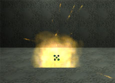
폭발 에미터
이 입자 시스템에는 두 개의 스프라이트 에미터가 있습니다. 하나는 폭발용, 또 하나는 불꽃용입니다. 첫번째 에미터는 약간의 변경으로 바로잡을 수 있는, 상당히 간단한 것입니다. 모든 입자들이 중심부의 기본 위치에서 시작되며, 이동하지 않습니다. 여기에는 오직 3개의 입자만이 있는데 이들은 거의 동시에 스폰됩니다. Automatic Initial Spawning (자동 초기 스폰하기) 옵션을 끄고 초당 입자수가 100이 되도록 설정하면 입자들이 동시에 스폰됩니다. 저는 Respawn Dead Particles (소멸된 입자 다시 스폰하기) 옵션도 무효화하여 폭발이 계속해서 되풀이되지 않도록 했습니다. 또 폭발의 짧은 특성을 포착하기 위해 입자의 수명을 아주 짧게 (0.64초) 했습니다. 폭발의 “모션” 은 입자들의 크기를 조정함으로써 처리됩니다. 4개의 크기 조정 포인트는 폭발의 확장에 대해 매끄러운 비선형 모션을 창출해냅니다. 처음 20분의 1초 이내에 입자의 크기가 4배가 됩니다 ; 이때부터 수명이 끝날때까지는 크기가 2배가 될 뿐입니다. 크기 조정 포인트를 3개만 사용하면, 아주 빠른 팽창이 직접 부드러운 점진적 팽창으로 이행되기 때문에 모션이 매우 변덕스러워 보입니다. 첫 팽창 후에 조정 포인트를 하나 추가하면 이행이 한결 온화해 보입니다. 저는 또 고정된 크기를 사용하는 대신 크기의 범위를 사용했습니다. 이렇게 하는 것이 폭발의 특질을 더 잘 포착할 수 있을 것 같았기 때문입니다. Rotation 및 Subdivision Fading 또한 이 입자 시스템에서 움직임의 느낌 표현에 큰 도움이 되었습니다. 이 입자들은 임의의 시작 회전으로 출발하며 느릿하게 스핀합니다. 초당 회전의 수는 0.05에서 0.1의 범위이며, 어느 방향으로 회전할지에 대한 확률은 50%입니다. 이 방법은 모든 입자가 최소한 0.05로 회전하는 것을 보장하기 때문에, 회전 범위를 -0.1에서 0.1로 하는 것보다 효과적이었습니다. 입자들이 이 느릿한 회전으로 오버랩함에 따라, 이는 폭발 내에 모션의 인상을 줍니다. Subdivision Fading은 폭발의 마지막에 쇠퇴를 도와줍니다. 입자 시스템은 이것이 없이도 괜찮아 보이고, 참으로 텍스처의 메모리에 압박을 받는 사람은 이것을 제거해도 되지만, Subdivision Fading을 사용하면 모든 것들이 훨씬 더 낫게 보입니다. 다음의 두 그림은 상당히 비슷해 보이지만 하나가 좀더 부식된 모습이고 조금 더 어둡습니다. 저는 에미터가 수명의 중간이 아니라 끝에서 두 번째 이미지로 페이드하도록 하기 위해 분할 스케일을 사용했습니다. 여기에는 처음 두 구획이 작용하게 하려면 세 번째 구획을 추가해야 한다는 문제가 있습니다. 세 번째의 값은 특정한 값이어야 할 필요는 없지만, 이것이 0.000일 경우에는 익스포트나 잘라내기/붙여넣기 때 값이 저장되지 않으므로 저는 0.001로 설정했습니다.
Colorscale과 Fading은 입자 시스템의 외관에 매우 중요합니다. 저는 페이드 인은 사용했지만 페이드 아웃은 사용하지 않았습니다. 에미터를 페이드 아웃 하기 위해 색상 척도를 사용했기 때문입니다. 페이드 하기와 색상 척도 사이의 중요한 차이는 페이드하기는 절대적 시간으로, 색상 척도는 상대적 시간으로 작용한다는 점입니다. 이 경우 저는 수명의 최대값과 최소값을 같은 것으로 사용했지만, 서로 다른 값을 사용하면 모든 입자가 동시에 같은 속도로 페이드 인 하지만 페이드 아웃은 각기 자신의 고유 속도로 하는 것이 보장됩니다. 저는 또한 Fading보다Colorscale이 더 일관성 있게 매끄러운 결과를 나타낸다는 것을 발견했습니다. 제가 폭발에 사용한 색상 척도는 각각 다른 여러 시점에서 시스템이 너무 밝거나 너무 어둡다고 생각될 때마다 이를 조정한, 여러 번의 시행착오 결과입니다. 또 작은 범위의 color multiplier(색상 승수)를 사용하여 폭발에 약간의 다양함을 주었으며, 같은 텍스처에 약간씩 다른 색상을 사용하여 “깊이”를 더했습니다.
저는 에미터가 수명의 중간이 아니라 끝에서 두 번째 이미지로 페이드하도록 하기 위해 분할 스케일을 사용했습니다. 여기에는 처음 두 구획이 작용하게 하려면 세 번째 구획을 추가해야 한다는 문제가 있습니다. 세 번째의 값은 특정한 값이어야 할 필요는 없지만, 이것이 0.000일 경우에는 익스포트나 잘라내기/붙여넣기 때 값이 저장되지 않으므로 저는 0.001로 설정했습니다.
Colorscale과 Fading은 입자 시스템의 외관에 매우 중요합니다. 저는 페이드 인은 사용했지만 페이드 아웃은 사용하지 않았습니다. 에미터를 페이드 아웃 하기 위해 색상 척도를 사용했기 때문입니다. 페이드 하기와 색상 척도 사이의 중요한 차이는 페이드하기는 절대적 시간으로, 색상 척도는 상대적 시간으로 작용한다는 점입니다. 이 경우 저는 수명의 최대값과 최소값을 같은 것으로 사용했지만, 서로 다른 값을 사용하면 모든 입자가 동시에 같은 속도로 페이드 인 하지만 페이드 아웃은 각기 자신의 고유 속도로 하는 것이 보장됩니다. 저는 또한 Fading보다Colorscale이 더 일관성 있게 매끄러운 결과를 나타낸다는 것을 발견했습니다. 제가 폭발에 사용한 색상 척도는 각각 다른 여러 시점에서 시스템이 너무 밝거나 너무 어둡다고 생각될 때마다 이를 조정한, 여러 번의 시행착오 결과입니다. 또 작은 범위의 color multiplier(색상 승수)를 사용하여 폭발에 약간의 다양함을 주었으며, 같은 텍스처에 약간씩 다른 색상을 사용하여 “깊이”를 더했습니다.
불꽃 에미터
 불꽃 에미터는 약간 더 복잡합니다. 우선, 이것은 불꽃-에미터가 아니라 스프라이트-에미터라는 것을 알아두는 것이 중요합니다. 이것은 주로 속도, 가속도, 그리고 입자가 그 외형을 이루기 위해 향하는 방향에 의존합니다. 입자의 모션은 간단하지만, 에미터는 많은 다른 것들을 이 모션과 함께 잘 작용하도록 조정합니다.
이 에미터에는 17개의 입자가 있으며, 폭발에서와 마찬가지로 Automatic Initial Spawning 옵션은 꺼져 있고 초당 입자수는 매우 높게 되어 있습니다. 소멸된 입자의 재스폰 옵션 역시 무효화 되었습니다. 입자의 수명은, 명백한 이유로, 매우 짧습니다. 이 입자 시스템에 대해서 가장 중요한 것들 가운데 하나는충돌이 유효화 되어 있다는 점입니다. 감쇠 요인들은 모두 기본값으로 남겨졌습니다. 따라서 복잡하지는 않지만 외양에 크게 도움이 됩니다.
입자들의 속도는 최소값과 최대값 사이에 넓은 간격이 있도록 설정되어, 입자들이 모든 방향으로 향하기 시작합니다. 이 값들은 X와 Y에 대해 0에 대칭이므로 한 특정한 방향으로 “기울지” 않습니다. Z 값은 중력의 하향 가속도에 대해 대칭이 아닙니다. 만일 값이 대칭이라면 시스템은 그것이 더 “정확” 해야 할지라도 너무 많이 아래로 이동하는 것처럼 보이게 됩니다. 가속도는 중력을 모방하는 큰 –Z 값을 가집니다. 이 값은 Unreal의 세계 중력에 상응하도록 설정된 것이 아닙니다; 이는 단지 올바르게 보이도록 조정된 것입니다. 이 에미터의 입자들이 흩날리는 파편들의 덩어리가 아니라 불꽃처럼 보이도록 하기 위해, 향하는 방향을 카메라를 향한 방향으로의 움직임을 따라 설정했습니다. 이것은 입자가 텍스처의 “윗면” 이 항상 입자가 움직이는 방향을 향하도록 회전한다는 뜻입니다. 입자 역시 동시에 카메라를 향하도록 최선을 다하지만, 이는 입자가 움직이는 방향을 따라 바라보는 것 같은 각도에서는 어려운 일입니다.
폭발 에미터처럼 이 에미터도 색상 척도, 색상 승수, 크기 척도 그리고 크기의 범위를 사용합니다. 이 모든 것들이 불꽃이 충격 효과의 기본인, 강한 초기 번쩍임을 나타내도록 하기 위해 함께 작용합니다. 색상 승수의 범위는 불꽃이 만들어질 때의 시각적 효과를 더하기 위해 폭발 에미터에서보다 넓게 분산되어 있습니다. 불꽃은 색상 척도를 사용하여 아주 빠르게 오렌지색으로 희미해지고, 따라서 그 시각적 우세를 잃습니다. 크기 척도 또한 불꽃의 초기 효과를 증대하는 작용을 합니다. 입자들은 상대적으로 매우 크게 시작하여 매우 빠르게 합당한 크기로 줄어듭니다. 그 이후 입자들이 차차 희미해짐에 따라 크기가 서서히 작아집니다. 크기의 범위는 번쩍임이 덜 대칭적으로 보이는 한편 보다 더 폭발처럼 보이도록 두드러지게 분산되었습니다.
구획 블렌딩은 에미터의 외관을 향상시키기 위해 유효화된 추가 효과입니다. 이것은 결코 중요한 것은 아닙니다. 에미터가 그처럼 짧은 수명을 가지고 있다는 점을 고려할 때 블렌딩은 아주 빠르기 때문입니다. 입자들이 블렌드될 때는 움직이는 텍스처처럼 보이는 것이 덜하기 때문에, 저는 이것이 입자를 더 낫게 보이도록 한다는 것을 발견했습니다. 이는 또 마지막에 텍스처가 보다 더 공처럼 되는 한편 보다 덜 스프라이트같이 되도록 하는데 도움이 됩니다. 이것은 크기 척도로는 할 수 없는 일입니다.
불꽃 에미터는 약간 더 복잡합니다. 우선, 이것은 불꽃-에미터가 아니라 스프라이트-에미터라는 것을 알아두는 것이 중요합니다. 이것은 주로 속도, 가속도, 그리고 입자가 그 외형을 이루기 위해 향하는 방향에 의존합니다. 입자의 모션은 간단하지만, 에미터는 많은 다른 것들을 이 모션과 함께 잘 작용하도록 조정합니다.
이 에미터에는 17개의 입자가 있으며, 폭발에서와 마찬가지로 Automatic Initial Spawning 옵션은 꺼져 있고 초당 입자수는 매우 높게 되어 있습니다. 소멸된 입자의 재스폰 옵션 역시 무효화 되었습니다. 입자의 수명은, 명백한 이유로, 매우 짧습니다. 이 입자 시스템에 대해서 가장 중요한 것들 가운데 하나는충돌이 유효화 되어 있다는 점입니다. 감쇠 요인들은 모두 기본값으로 남겨졌습니다. 따라서 복잡하지는 않지만 외양에 크게 도움이 됩니다.
입자들의 속도는 최소값과 최대값 사이에 넓은 간격이 있도록 설정되어, 입자들이 모든 방향으로 향하기 시작합니다. 이 값들은 X와 Y에 대해 0에 대칭이므로 한 특정한 방향으로 “기울지” 않습니다. Z 값은 중력의 하향 가속도에 대해 대칭이 아닙니다. 만일 값이 대칭이라면 시스템은 그것이 더 “정확” 해야 할지라도 너무 많이 아래로 이동하는 것처럼 보이게 됩니다. 가속도는 중력을 모방하는 큰 –Z 값을 가집니다. 이 값은 Unreal의 세계 중력에 상응하도록 설정된 것이 아닙니다; 이는 단지 올바르게 보이도록 조정된 것입니다. 이 에미터의 입자들이 흩날리는 파편들의 덩어리가 아니라 불꽃처럼 보이도록 하기 위해, 향하는 방향을 카메라를 향한 방향으로의 움직임을 따라 설정했습니다. 이것은 입자가 텍스처의 “윗면” 이 항상 입자가 움직이는 방향을 향하도록 회전한다는 뜻입니다. 입자 역시 동시에 카메라를 향하도록 최선을 다하지만, 이는 입자가 움직이는 방향을 따라 바라보는 것 같은 각도에서는 어려운 일입니다.
폭발 에미터처럼 이 에미터도 색상 척도, 색상 승수, 크기 척도 그리고 크기의 범위를 사용합니다. 이 모든 것들이 불꽃이 충격 효과의 기본인, 강한 초기 번쩍임을 나타내도록 하기 위해 함께 작용합니다. 색상 승수의 범위는 불꽃이 만들어질 때의 시각적 효과를 더하기 위해 폭발 에미터에서보다 넓게 분산되어 있습니다. 불꽃은 색상 척도를 사용하여 아주 빠르게 오렌지색으로 희미해지고, 따라서 그 시각적 우세를 잃습니다. 크기 척도 또한 불꽃의 초기 효과를 증대하는 작용을 합니다. 입자들은 상대적으로 매우 크게 시작하여 매우 빠르게 합당한 크기로 줄어듭니다. 그 이후 입자들이 차차 희미해짐에 따라 크기가 서서히 작아집니다. 크기의 범위는 번쩍임이 덜 대칭적으로 보이는 한편 보다 더 폭발처럼 보이도록 두드러지게 분산되었습니다.
구획 블렌딩은 에미터의 외관을 향상시키기 위해 유효화된 추가 효과입니다. 이것은 결코 중요한 것은 아닙니다. 에미터가 그처럼 짧은 수명을 가지고 있다는 점을 고려할 때 블렌딩은 아주 빠르기 때문입니다. 입자들이 블렌드될 때는 움직이는 텍스처처럼 보이는 것이 덜하기 때문에, 저는 이것이 입자를 더 낫게 보이도록 한다는 것을 발견했습니다. 이는 또 마지막에 텍스처가 보다 더 공처럼 되는 한편 보다 덜 스프라이트같이 되도록 하는데 도움이 됩니다. 이것은 크기 척도로는 할 수 없는 일입니다.
종합
이것은 거의 항상 훌륭해 보이는 간단한 시스템입니다. 조절을 한다면 텍스처 메모리를 좀 덜 사용할 수도 있겠지만, 두 텍스처가 모두 256 x 256 이하이고 DXT5로 압축되었다는 점을 감안하면 그다지 대단한 것은 아닙니다.Muzzle Flash (총구 플래시)
제작: Chris Linder
우선 고려할 사항들
총구 플래시 제작에서 가장 까다로운 점들 가운데 하나는, 보통 상황에서 이것이 20분의 1초 정도 지속된다는점입니다. 이 속도에서는 육안으로 무엇이 잘되고 무엇이 잘못되었는지 간파할 수 있지만, 유감스럽게도 무슨 일이 진행되고 있는지 상세하게 알아내기가 매우 힘들어서 문제점을 정정하기가 어렵습니다. 이 문제에 대한 해결책으로서, 저는 먼저 느린 동작의 총구 플래시를 만든 다음, 속도를 높여가면서 다소의 조정을 했습니다. 속도 문제의 처리 외에, 저는 아주 적은 수의 입자로 시스템을 만들고 싶었습니다. 총기의 발사는 한 번에 많이 발생할 가능성이 많은 것이기 때문입니다. 입자 시스템이 바로 카메라의 정면에서 사용되는 First Person Game에서의 오버드로 (비디오 카드의 채움 비율에 의해 제한되는, 같은 픽셀이 그려지는 횟수) 문제도 고려사항입니다. 이는 여러 개의 알파 이미지가 장면의 커다란 부분 위에 그려지는 것이기 때문입니다. 심지어 고작 16개의 입자로도, 아래의 이미지에서 보는 것같은 확연한 오버드로 문제가 생깁니다. 오른 쪽의 이미지는 렌더링 모드를 UnrealEd 의 투시 뷰포트 맨 위의 오른쪽 부분에 있는 버튼을 사용해서 유효화할 수 있는`Depth Complexity'로 설정하여 만들어진 것입니다.
오른 쪽의 이미지는 렌더링 모드를 UnrealEd 의 투시 뷰포트 맨 위의 오른쪽 부분에 있는 버튼을 사용해서 유효화할 수 있는`Depth Complexity'로 설정하여 만들어진 것입니다.

플래시 에미터(처음 세 개의 에미터)
왜 에미터가 여러개인가? (속도 및 크기)
이처럼 작은 입자 시스템에서 세 개의 에미터를, 그 중 2개는 각각 오직 2개의 입자를 가진, 사용하는 것이 이상하게 보일지도 모릅니다. 이것은 Unreal의 입자 시스템이 크기를 임의로 하기 및 큰 입자는 느리게 움직이고 작은 입자는 빠르게 움직이게 하는 등의 기능을 가지고 있기 때문입니다. 크기와 속도를 모두 임의로 할 수 있지만, 그러면 큰 입자와 작은 입자들이 모두 무작위로 느리거나 빨라집니다. Unreal은 이 문제를 에미터 하나를 크고 느린 입자용으로 만들고, 작고 빠른 입자용으로 또 하나의 에미터를 작성함으로써 해결했습니다. 여기서는 크고 느린 것에서부터 작고 빠른 것까지의 범위의 모델을 위해 세 개의 에미터를 사용했습니다. 좀더 정확해야 할 필요가 있는 경우에는, 에미터당 입자수를 더 적게 해서 더 많은 수의 에미터를 사용할 수 있습니다.더 많은 입자를 모방하기 위한 텍스처, 크기 척도 및 회전의 사용
수많은 입자들을 만드는 대신, 저는 여러 개의 총구 “화염” 조각을 가진 하나의 텍스처를 사용했습니다.
또한 Subdivision Fading 과 Scale을 사용하여 시간이 지남에 따라 희미해지는 텍스처를 애니메이트 했습니다 (이에 대한 자세한 설명은 충격 효과 튜토리얼을 참고하십시오). 택스처상의 조각들이 밖을 향해 움직이는 것처럼 보이게 하기 위해, 크기 척도를 사용하여 입자들이 0의 크기에서부터 바깥쪽을 향해 팽창하도록 했습니다. 가장 크고 느린 첫 번째 에미터는 2개의 크기 척도 포인트를 사용하여, 그 일생 동안 0에서부터 완전 크기로 팽창합니다. 두 번째 에미터는 3개의 크기 척도 포인트를 사용하여 처음에는 빠르게, 그리고나서 차츰차츰 그 생애의 끝을 향해 갑니다. 가장 작고 빠른 세 번재 에미터는 3개의 포인트를 사용하여 빠르게 팽창하고 점차적으로 줄어듭니다. 저는 또 모든 입자들을 무작위 회전과 약간의 스핀으로 시작했습니다. 이것은 마치 텍스처상의 “화염” 조각들이 서로 교류하여 시스템과 별개로 움직이는 것처럼 보이게 합니다. 이 모든 요인들이 함께 작용하여, 여러 개의 작은 조각들로 이루어진 하나의 플래시에 원래부터 찢어진 모양같은 느낌을 줍니다.
색상과 페이딩
이 입자 시스템에서 색상과 페이딩은 별로 복잡하지 않습니다. 페이딩은 20분의 1초동안 지속하는 입자 시스템에서 그다지 큰 문제가 아닙니다. 약간의 페이딩이 아주 없는 것보다는 낫지만 그 값이 정확할 필요는 없습니다. 원래 저는 입자들이 튀어 나온 다음 그 생애 동안 차츰 희미해지도록 했습니다. 시스템에 깊이와 적절한 색상을 부여하도록 색상 승수의 범위와 색상 척도가 조정되었습니다.연기 에미터
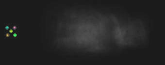
이 에미터는 매우 간단합니다. 이것은 무작위 시작 위치와 속도가 다소 서로 떨어져 있는 3개의 입자로 된 연기입니다. 이 입자들은 큰 값의 X 시작 속도를 가지고 있지만 시작 속도의 범위가 넓기 때문에, 서로 밀접하게 뭉쳐있지 않고 이동의 방향을 따라 퍼져 있습니다. 또한 Velocity Loss Range(속도 손실의 범위)가 사용되었습니다. 이것은 입자들이 마찰이나 공기 저항처럼 지정된 방향으로 속도를 늦추도록 합니다. 저는 입자들이 눈에 띄게 움직이는 유일한 방향인 X의 손실 범위만을 사용했습니다. 연기가 한 플래시 내에서, 그리고 여러 플래시들 사이에서 다양하게 보이도록 넓은 크기 범위가 사용되었습니다.종합
이 입자 시스템은 상대적으로 적은 수의 입자에서 훌륭한 총구 플래시처럼 보이는 것 같습니다. 이 시스템을 개선하기 원하고 더 많은 입자들을 사용할 수 있다면, 연기로 시작하면 좋을 것입니다. 더 오래 지속되고 더 많이 소용돌이치는 연기를 추가하는 것이 첫 단계입니다. 그밖의 개선으로는 이 시스템에 여러 개의 자동 소총과 연합된 배출구 플래시의 추가, 또는 총의 약실에 플래시를 추가하는 것이 있습니다. 그러면 두 개의 객체가 별도로 스폰될 필요가 없습니다. 이 입자 시스템을 사용할 수 있는 곳이 많지만, 이 자체로도 훌륭한 기초 및 참조가 됩니다.SpotLights (스포트라이트)
제작: Lode Vandevenne, 업데이트: Chris Linder 이 맵에서는 각 부위에 LightEffect LE_SpotLight와 볼륨 조명 효과를 만들어내기 위한 SpriteEmitter를 가진 에미터를 사용합니다 .
먼저 에미터를 하나 추가합니다. 속성을 열고 Advanced에서 bDirectional를 True로 설정합니다. 그 다음 이것을 Rotation Tool을 사용해서 회전, 화살표가 이 스포트라이트가 비추게 될 방향을 향하도록 합니다.
이 맵에서는 각 부위에 LightEffect LE_SpotLight와 볼륨 조명 효과를 만들어내기 위한 SpriteEmitter를 가진 에미터를 사용합니다 .
먼저 에미터를 하나 추가합니다. 속성을 열고 Advanced에서 bDirectional를 True로 설정합니다. 그 다음 이것을 Rotation Tool을 사용해서 회전, 화살표가 이 스포트라이트가 비추게 될 방향을 향하도록 합니다.
 이 회전은 두 가지에 사용됩니다: LightEffect LE_SpotLight은 스포트라이트의 방향을 결정하기 위해 이것이 필요합니다. 그리고 SpriteEmitter는 입자가 움직일 방향을 결정하기 위해 이것을 사용합니다.
에미터에서 SpriteEmitter를 추가하고, 여기에 아래의 첫 번째 그림과 같은 텍스처를 줍니다. 이것은 두 번째 그림의 매우 어두운 버전입니다. 이 어두운 텍스처 여러 개가 한데 모여 매우 매끄러운 LightCone?(빛 원뿔)을 만들게 됩니다.
이 회전은 두 가지에 사용됩니다: LightEffect LE_SpotLight은 스포트라이트의 방향을 결정하기 위해 이것이 필요합니다. 그리고 SpriteEmitter는 입자가 움직일 방향을 결정하기 위해 이것을 사용합니다.
에미터에서 SpriteEmitter를 추가하고, 여기에 아래의 첫 번째 그림과 같은 텍스처를 줍니다. 이것은 두 번째 그림의 매우 어두운 버전입니다. 이 어두운 텍스처 여러 개가 한데 모여 매우 매끄러운 LightCone?(빛 원뿔)을 만들게 됩니다.

 이 텍스처는 흰색입니다. 따라서 이것을 어떤 색깔의 SpotLight에도 사용할 수 있습니다: 그저 ColorScale만 주면 됩니다. 예를 들면 초록색 빛에 대해서는 아래의 것이 적절한 ColorScale?일 것입니다:
이 텍스처는 흰색입니다. 따라서 이것을 어떤 색깔의 SpotLight에도 사용할 수 있습니다: 그저 ColorScale만 주면 됩니다. 예를 들면 초록색 빛에 대해서는 아래의 것이 적절한 ColorScale?일 것입니다:
 위의 이미지에서 보듯이, 처음과 마지막의 색이 같습니다: 이제 입자의 색은 전 LifeTime 동안 변하지 않고 남아있게 됩니다.
여기서 아주 짧은 Fade In 과 긴 Fade Out 을 설정하여 입자가 서서히 사라지지만 동시에 너무 급작스럽게 시작하지 않도록 합니다. 또 Max Particles 은 20으로 아주 작게 (이것은 빛 원뿔의 크기에 따라 달라집니다), Start Size 는 X(Min)과 X(Max)를 50으로 (이것도 빛 원뿔의 크기에 따라달라집니다) 합니다. Rotation 에서 Use Rotation From 을 Actor 로 설정, 축이 에미터 액터의 회전에 의해 회전하도록 합니다. 이것은 아주 중요합니다: 그렇지 않으면 Velocity(속도)의 올바른 방향을 설정하기가 매우 어렵습니다. Size Scale 을 다음과 같이 설정하십시오:
위의 이미지에서 보듯이, 처음과 마지막의 색이 같습니다: 이제 입자의 색은 전 LifeTime 동안 변하지 않고 남아있게 됩니다.
여기서 아주 짧은 Fade In 과 긴 Fade Out 을 설정하여 입자가 서서히 사라지지만 동시에 너무 급작스럽게 시작하지 않도록 합니다. 또 Max Particles 은 20으로 아주 작게 (이것은 빛 원뿔의 크기에 따라 달라집니다), Start Size 는 X(Min)과 X(Max)를 50으로 (이것도 빛 원뿔의 크기에 따라달라집니다) 합니다. Rotation 에서 Use Rotation From 을 Actor 로 설정, 축이 에미터 액터의 회전에 의해 회전하도록 합니다. 이것은 아주 중요합니다: 그렇지 않으면 Velocity(속도)의 올바른 방향을 설정하기가 매우 어렵습니다. Size Scale 을 다음과 같이 설정하십시오:
 이 Size Scale 은 입자가 앞쪽으로 이동하는 동안 커져서 LightCone을 만들도록 합니다 . 입자가 커지지 않으면, lightcylinder(원기둥 모양 빛)를 얻게 됩니다. Relative Warmup Time 과 Warmup Ticks Per Second 를 모두 1로 설정, 시스템이 워밍업되기를 기다리지 않고 즉시 나타나도록 합니다. 각각의 LightCone?은 서로 다른 LifeTime 과 Start Velocity 를 가지지만, 모양은 모두 같습니다. "가장 빠른" 파랑색 시스템은 LifeTime 이 2, Start Velocity 는 X(Min) 과 X(Max)가 모두 100입니다. 초록색 시스템은 파랑색 시스템보다 10배가 더 느려서, Lifetime 이 20 Start Velocity 가 10입니다. 빨강색 시스템은 초록색보다 10배 더 느리고, 흰색 시스템은 빨강색보다 10배 더 느립니다 (이 속도들은 General에서 Scale Speed를 사용하여 설정합니다). 입자 시스템, 특히 스포트 라이트의 바닥 부분을 자세히 검사해보면, 각기 다른 속도간의 차이점을 확인할 수 있습니다. 파랑색 시스템에서는 모션이 선명하게 보이며, 기초 부분은 형광등처럼 깜박이는 것으로 보입니다. 초록색 시스템의 모션은 매우 부드럽지만 기초 부분이 고동하기 때문에 좀 이상하게 보입니다. 이것은 입자의 수를 늘리고 Opacity 를 약하게 하면 해결되지만, 그러면 렌더 속도가 느려질 것입니다. 빨강색 시스템에서는 모션이 간신히 보이며, 이것은 훨씬 더 적게 고동하므로 아주 이상하게 보이지는 않습니다. 흰색 시스템은 멈춰 있는 상태로 보이며, 이것은 100초 동안에 고동하기 때문에 고동과 관련된 문제점이 없습니다.
Use Rotation From 이 Actor 로 설정되어 있고 에미터를 정확한 방향으로 회전했기 때문에, 이제 입자가 SpotLight의 방향으로 움직이고 멋진 LightCone을 만들어내야 합니다.
이 Size Scale 은 입자가 앞쪽으로 이동하는 동안 커져서 LightCone을 만들도록 합니다 . 입자가 커지지 않으면, lightcylinder(원기둥 모양 빛)를 얻게 됩니다. Relative Warmup Time 과 Warmup Ticks Per Second 를 모두 1로 설정, 시스템이 워밍업되기를 기다리지 않고 즉시 나타나도록 합니다. 각각의 LightCone?은 서로 다른 LifeTime 과 Start Velocity 를 가지지만, 모양은 모두 같습니다. "가장 빠른" 파랑색 시스템은 LifeTime 이 2, Start Velocity 는 X(Min) 과 X(Max)가 모두 100입니다. 초록색 시스템은 파랑색 시스템보다 10배가 더 느려서, Lifetime 이 20 Start Velocity 가 10입니다. 빨강색 시스템은 초록색보다 10배 더 느리고, 흰색 시스템은 빨강색보다 10배 더 느립니다 (이 속도들은 General에서 Scale Speed를 사용하여 설정합니다). 입자 시스템, 특히 스포트 라이트의 바닥 부분을 자세히 검사해보면, 각기 다른 속도간의 차이점을 확인할 수 있습니다. 파랑색 시스템에서는 모션이 선명하게 보이며, 기초 부분은 형광등처럼 깜박이는 것으로 보입니다. 초록색 시스템의 모션은 매우 부드럽지만 기초 부분이 고동하기 때문에 좀 이상하게 보입니다. 이것은 입자의 수를 늘리고 Opacity 를 약하게 하면 해결되지만, 그러면 렌더 속도가 느려질 것입니다. 빨강색 시스템에서는 모션이 간신히 보이며, 이것은 훨씬 더 적게 고동하므로 아주 이상하게 보이지는 않습니다. 흰색 시스템은 멈춰 있는 상태로 보이며, 이것은 100초 동안에 고동하기 때문에 고동과 관련된 문제점이 없습니다.
Use Rotation From 이 Actor 로 설정되어 있고 에미터를 정확한 방향으로 회전했기 때문에, 이제 입자가 SpotLight의 방향으로 움직이고 멋진 LightCone을 만들어내야 합니다.
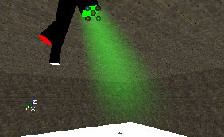
조명 효과를 위해서는 에미터를 열고, Lighting --> LightColor 으로 가서 조명의 Color Scale 을 입자에 대한 것과 같게 설정합니다. 그 다음 Lighting에서 LightType을 LT_Steady로, LightEffect를 LE_SpotLight로, 그리고 LightRadius를 128 (여러분의 맵에 적절한 수치)로 설정합니다. 그리고나서 LightCone을 64, 또는 대충 여러분이 원하는 LightEffect의 크기에 따른 값으로 설정합니다: 이 값이 클수록 바닥에 비추는 조명의 크기가 커지게 됩니다. 예를 들면, 아래에서 첫 번째 스크린샷은 LightCone이 13이며, 두 번째 스크린샷에서는이것이 255입니다. 여러분 스스로 볼륨 조명 효과의 크기와 비교해서 어떤 것이 가장 보기 좋은지 판단해야 합니다.
 각기 다른 색깔과 방향의 여러 조명에 대한 효과를 얻으려면, 에미터를 복제하여 새 에미터에 원하는 색상과 방향을 지정해주면 됩니다.
각기 다른 색깔과 방향의 여러 조명에 대한 효과를 얻으려면, 에미터를 복제하여 새 에미터에 원하는 색상과 방향을 지정해주면 됩니다.
Breaking Glass(유리 깨기)
제작: Lode Vandevenne, 수정/업데이트: Chris Linder

 이 맵에는 창문을 나타내는 mover (이동자)가 있습니다. 창문이 저격되면, 이동자는 철수하며 동시에 BreakingGlassEmitter를 스폰하는 스폰자를 유발합니다. 이 BreakingGlassEmitter는 몇몇 속성들이 설정되어 있는 SpriteEmitter일 뿐입니다. 여기서는 창문을 저격하면 창문 전체가 파열하지만, 창문의 일부만이 깨지도록 하려면 다른 이동자들로부터 각기 고유의 스폰자 등을 가진 창문을 만들면 됩니다.
이 맵에는 무기가 없습니다. 그러나 콘솔에서 loaded를 입력하면 창문을 저격할 무기를 얻을 수 있습니다.
우선 창문의 한가운데에 SpriteEmitter를 추가합니다. 나중에 여기에 BreakingGlassEmitter를 스폰하는 것을 추가하게 될 것입니다. 그러나 이를 지금 에미터로 하는 것이 더 쉽고 에디터에서 미리보기도 할 수 있습니다.
아래의 견본 맵에서는 텍스처가 2 * 2의 구획을 가지고 있습니다:
이 맵에는 창문을 나타내는 mover (이동자)가 있습니다. 창문이 저격되면, 이동자는 철수하며 동시에 BreakingGlassEmitter를 스폰하는 스폰자를 유발합니다. 이 BreakingGlassEmitter는 몇몇 속성들이 설정되어 있는 SpriteEmitter일 뿐입니다. 여기서는 창문을 저격하면 창문 전체가 파열하지만, 창문의 일부만이 깨지도록 하려면 다른 이동자들로부터 각기 고유의 스폰자 등을 가진 창문을 만들면 됩니다.
이 맵에는 무기가 없습니다. 그러나 콘솔에서 loaded를 입력하면 창문을 저격할 무기를 얻을 수 있습니다.
우선 창문의 한가운데에 SpriteEmitter를 추가합니다. 나중에 여기에 BreakingGlassEmitter를 스폰하는 것을 추가하게 될 것입니다. 그러나 이를 지금 에미터로 하는 것이 더 쉽고 에디터에서 미리보기도 할 수 있습니다.
아래의 견본 맵에서는 텍스처가 2 * 2의 구획을 가지고 있습니다:
 따라서 Number of U-Subdivisions 와 Number of V-Subdivisions 는 2로 설정되었으며, Use Random Subdivision 이 체크되었습니다. 현재 파편들은 모두 같은 모양이 아닙니다. 여러가지 색으로 된 창문에서는, 파편들을 각기 다른 색깔로 하기 위해 이것을 사용할 수 있습니다. Color Multiplier 를 사용해서 색깔을 다양하게 할 수도 있지만, 이것은 무작위이기 때문에 여러분이 제어할 수 있는 범위가 적어집니다. 입자에 더 많은 변형을 추가하려면 1에서 10 사이의 Start Size 를 사용하십시오. 입자들은 또한 Spin Particles 를 체크하고 Start Spin 을 0과 1 사이로 설정함으로써 임의의 회전(모션이 아니라 방향)으로 시작합니다.
파편들의 움직임에 대해서는, Acceleration과 Velocity가 사용됩니다. 여러분의 창문이 이 예와 같은 식으로 작용하게 하려면, 방향과 축에 대해, Advanced에서 bDirectional을 'true'로 설정하고 화살표가 파편들이 가기를 원하는 방향을 향할때까지 회전하십시오. 그리고 Rotation 에서 Use Rotation From 을 Actor 로 설정하십시오.
음수의 Z Accelaration 은 파편들이 떨어지게 합니다. Start Velocity 를 X(Min)을 -60, X(Max)를 250으로 하면 모든 파편들이 대부분 창문의 한 쪽으로 떨어집니다. 파편들이 다른 쪽으로도 떨어지게 하고 싶으면 X(Min)을 -250으로 하십시오. 이 Velocity가 높을수록 파편들이 더 앞쪽으로 날립니다. 따라서 빌딩 내에 커다란 폭발이 있을 경우 이 파편들에 훨씬 더 높은 속도를 줄 수 있습니다. Start Velocity 에서 Y(Min)을 -100, Y(Max)를 100으로 하면 파편들이 옆쪽으로보다는 약간 더 앞쪽으로 떨어집니다. 그렇지 않으면 지면에 밋밋한 사각형 모양을 형성하게 됩니다.
입자의 스폰에 대해: 여기에는 아주 많은 입자들이 있어야 하며, 이 입자들은 창문 내에서 거의 동시에 스폰되어야 합니다. 그 뒤에는 새 입자가 더 이상 나타나지 않습니다. 이를 위해서는 MaxParticles를 1000으로 합니다. 그렇지만, 창문이 더 크면 입자가 더 많아야 합니다. 입자들은 아주 작기 때문에 채움 비율 문제는 별로 없지만, 아주 많은 수의 입자는 여전히 성능에 타격이 됩니다. 창문의 크기가 512*256이고 에미터가 그 중앙에 있다고 가정하고, Start Location 을 Y(Min) = -256, Y(Max) = 256, Z(Min) = -128, Z(Max) = 128로 설정하십시오.
General 에서 Automatic Spawning(자동 스폰) 의 체크를 해제하고 Particles Per Second(초당 입자수) 를 설정합니다. SpriteEmitter는 초당 50,000개의 속도로 입자들을 만들어내려고 하지만, MaxParticles가 1000으로 설정되었기 때문에 오직 1000개의 입자만 만들어지는데, 이것들이 모두 0.02초 이내에 만들어집니다. 이것은 마치 모든 입자들이 동시에 스폰되는 것처럼 보입니다.
LifeTime 을 10000000, Respawn Dead Particles 를 False로 설정하고 에미터의 Global 설정에서 bAutoDestroy를 True로 해 보십시오. 이제 입자들은 10000000초동안 존속하며, 그 후에는 소멸합니다. 입자들은 다시 스폰되지 않으며 액터는 파기됩니다. 사실, 이런일은 절대 일어나지 않습니다. 플레이어가 10000000초동안 기다리려면 115일이 걸리기 때문입니다. 그렇지만 LifeTime 을 20초로 하면(한 예로), 잠시 후 파편들이 사라지고 성능이 회복됩니다.
지면에 남게 될, 튀어오르는 파편들에 대해 Use Collision 을 True로 합니다 (그렇지 않으면 이것들이 비닥을 통해 떨어집니다). DampingFactorRange에서 X, Y, 및 Z 모두에 1보다 작은 수의 값을 주십시오. 이는 입자들이 이 모든 방향에 Velocity 또는 Acceleration을 가지기 때문이며, 그렇지 않으면 입자들이 영원히 움직입니다! X(Min),Y(Min) = 0.28 그리고 X(Max),Y(Min) = 0.999, 그리고 Z(Min) = 0.093, Z(Max) = 0.309일 때 아주 효과가 좋습니다. 이 설정은 입자들이 매우 느리게 반동하지만 지면을 따라 약간 스쳐 날도록 합니다. Movement 에서 Min Squared Velocity 를 9700으로 하여 입자들이 멈출게 될 때의 뜻밖의 효과를 예방합니다. 아주 느린 속도로의 Collision은 그다지 효과적이지 않습니다. 그러므로 입자들이 일정 속도 이하로 된 후에는 그들의 움직임을 멈추도록 하면 더 이상의 충돌이 일어나지 않게 됩니다.
이제 맵을 열었을 때 파편들을 방출하는 에미터를 기지게 됐습니다. 그러나 이 에미터는 그 이상 아무 일도 하지 않습니다. 이 에미터를 플레이어가 창문을 저격하는 순간 모든 속성들을 가진 상태로 스폰하고 싶다면, 에미터의 하위클래스를 만드십시오. 예를 들어 이 하위 클래스의 이름을 "BreakingGlassEmitter" 라고 합니다. 이 클래스를 맵에 추가하지 말고 그 대신 Actor Class Browser에서 이 클래스의 Default Properties(기본 속성)를 여십시오. 이 기본 속성들이 BreakingGlassEmitter가 스폰되었을 때 사용될 것들입니다. 그러므로 방금 만든 에미터의 (여러분이 창에 배치한) 속성들을 이곳에 복사하여야 합니다.
이를 가장 쉬운 방법으로 하려면, 먼저 창 내에 있는 에미터의 속성을 열어 SpriteEmitter의 이름을 복사합니다. 그 다음 이 이름을 BreakingGlassEmitter 클래스의 기본 속성에 붙여넣기 합니다. 그러면 창에서 에미터에 주어진 모든 속성들을 얻게 됩니다.
따라서 Number of U-Subdivisions 와 Number of V-Subdivisions 는 2로 설정되었으며, Use Random Subdivision 이 체크되었습니다. 현재 파편들은 모두 같은 모양이 아닙니다. 여러가지 색으로 된 창문에서는, 파편들을 각기 다른 색깔로 하기 위해 이것을 사용할 수 있습니다. Color Multiplier 를 사용해서 색깔을 다양하게 할 수도 있지만, 이것은 무작위이기 때문에 여러분이 제어할 수 있는 범위가 적어집니다. 입자에 더 많은 변형을 추가하려면 1에서 10 사이의 Start Size 를 사용하십시오. 입자들은 또한 Spin Particles 를 체크하고 Start Spin 을 0과 1 사이로 설정함으로써 임의의 회전(모션이 아니라 방향)으로 시작합니다.
파편들의 움직임에 대해서는, Acceleration과 Velocity가 사용됩니다. 여러분의 창문이 이 예와 같은 식으로 작용하게 하려면, 방향과 축에 대해, Advanced에서 bDirectional을 'true'로 설정하고 화살표가 파편들이 가기를 원하는 방향을 향할때까지 회전하십시오. 그리고 Rotation 에서 Use Rotation From 을 Actor 로 설정하십시오.
음수의 Z Accelaration 은 파편들이 떨어지게 합니다. Start Velocity 를 X(Min)을 -60, X(Max)를 250으로 하면 모든 파편들이 대부분 창문의 한 쪽으로 떨어집니다. 파편들이 다른 쪽으로도 떨어지게 하고 싶으면 X(Min)을 -250으로 하십시오. 이 Velocity가 높을수록 파편들이 더 앞쪽으로 날립니다. 따라서 빌딩 내에 커다란 폭발이 있을 경우 이 파편들에 훨씬 더 높은 속도를 줄 수 있습니다. Start Velocity 에서 Y(Min)을 -100, Y(Max)를 100으로 하면 파편들이 옆쪽으로보다는 약간 더 앞쪽으로 떨어집니다. 그렇지 않으면 지면에 밋밋한 사각형 모양을 형성하게 됩니다.
입자의 스폰에 대해: 여기에는 아주 많은 입자들이 있어야 하며, 이 입자들은 창문 내에서 거의 동시에 스폰되어야 합니다. 그 뒤에는 새 입자가 더 이상 나타나지 않습니다. 이를 위해서는 MaxParticles를 1000으로 합니다. 그렇지만, 창문이 더 크면 입자가 더 많아야 합니다. 입자들은 아주 작기 때문에 채움 비율 문제는 별로 없지만, 아주 많은 수의 입자는 여전히 성능에 타격이 됩니다. 창문의 크기가 512*256이고 에미터가 그 중앙에 있다고 가정하고, Start Location 을 Y(Min) = -256, Y(Max) = 256, Z(Min) = -128, Z(Max) = 128로 설정하십시오.
General 에서 Automatic Spawning(자동 스폰) 의 체크를 해제하고 Particles Per Second(초당 입자수) 를 설정합니다. SpriteEmitter는 초당 50,000개의 속도로 입자들을 만들어내려고 하지만, MaxParticles가 1000으로 설정되었기 때문에 오직 1000개의 입자만 만들어지는데, 이것들이 모두 0.02초 이내에 만들어집니다. 이것은 마치 모든 입자들이 동시에 스폰되는 것처럼 보입니다.
LifeTime 을 10000000, Respawn Dead Particles 를 False로 설정하고 에미터의 Global 설정에서 bAutoDestroy를 True로 해 보십시오. 이제 입자들은 10000000초동안 존속하며, 그 후에는 소멸합니다. 입자들은 다시 스폰되지 않으며 액터는 파기됩니다. 사실, 이런일은 절대 일어나지 않습니다. 플레이어가 10000000초동안 기다리려면 115일이 걸리기 때문입니다. 그렇지만 LifeTime 을 20초로 하면(한 예로), 잠시 후 파편들이 사라지고 성능이 회복됩니다.
지면에 남게 될, 튀어오르는 파편들에 대해 Use Collision 을 True로 합니다 (그렇지 않으면 이것들이 비닥을 통해 떨어집니다). DampingFactorRange에서 X, Y, 및 Z 모두에 1보다 작은 수의 값을 주십시오. 이는 입자들이 이 모든 방향에 Velocity 또는 Acceleration을 가지기 때문이며, 그렇지 않으면 입자들이 영원히 움직입니다! X(Min),Y(Min) = 0.28 그리고 X(Max),Y(Min) = 0.999, 그리고 Z(Min) = 0.093, Z(Max) = 0.309일 때 아주 효과가 좋습니다. 이 설정은 입자들이 매우 느리게 반동하지만 지면을 따라 약간 스쳐 날도록 합니다. Movement 에서 Min Squared Velocity 를 9700으로 하여 입자들이 멈출게 될 때의 뜻밖의 효과를 예방합니다. 아주 느린 속도로의 Collision은 그다지 효과적이지 않습니다. 그러므로 입자들이 일정 속도 이하로 된 후에는 그들의 움직임을 멈추도록 하면 더 이상의 충돌이 일어나지 않게 됩니다.
이제 맵을 열었을 때 파편들을 방출하는 에미터를 기지게 됐습니다. 그러나 이 에미터는 그 이상 아무 일도 하지 않습니다. 이 에미터를 플레이어가 창문을 저격하는 순간 모든 속성들을 가진 상태로 스폰하고 싶다면, 에미터의 하위클래스를 만드십시오. 예를 들어 이 하위 클래스의 이름을 "BreakingGlassEmitter" 라고 합니다. 이 클래스를 맵에 추가하지 말고 그 대신 Actor Class Browser에서 이 클래스의 Default Properties(기본 속성)를 여십시오. 이 기본 속성들이 BreakingGlassEmitter가 스폰되었을 때 사용될 것들입니다. 그러므로 방금 만든 에미터의 (여러분이 창에 배치한) 속성들을 이곳에 복사하여야 합니다.
이를 가장 쉬운 방법으로 하려면, 먼저 창 내에 있는 에미터의 속성을 열어 SpriteEmitter의 이름을 복사합니다. 그 다음 이 이름을 BreakingGlassEmitter 클래스의 기본 속성에 붙여넣기 합니다. 그러면 창에서 에미터에 주어진 모든 속성들을 얻게 됩니다.
class <nop>BreakingGlassSpawner extends Emitter;
function trigger(actor Other, pawn <nop>EventInstigator)
{
Spawn(class'mylevel.BreakingGlassEmitter');
}
물론, 이 작은 스크립트는 완전한 것이 아닙니다.
이 BreakingGlassSpawner를 (에미터가 있던) 창의 한가운데에 추가하고, 여기에 한 예로 “유리” 같은 태그를 붙입니다. 따라서 견본 맵에는 스폰되는 BreakingGlassEmitter와 트리거되었을 경우 BreakingGlassEmitter를 스폰하는 BreakingGlassSpawner, 두 개의 새 클래스가 생겼습니다.
다음에는 저격되기 전의 유리를 나타내는 이동자를 창에 배치합니다. 이 이동자의 Key1을 맵 외부의 어딘가에 배치하고, Mover 속성에서 bDamageTriggered = True, MoveTime = 0, bTriggerOnceOnly = True로 설정하고, Object에서 InitialState = TriggerOpenTimed, 그리고 Event에서Event를 BreakingGlassSpawner, "유리"의 태그로 설정하십시오.
그러면 이 이동자는 저격 당했을 때 스폰자를 트리거하고, 스폰자는 유리 깨기 에미터를 스폰하며, 이는 여러분이 창을 저격한 것같이 보이게 됩니다.
Spooky Hell's Lightning (무서운 지옥의 번개)
제작: Epic Games, 문서화: Chris Linder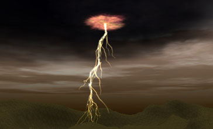
이것은 상당히 복잡한 번개의 예입니다. 여기에는 광선의 가지내기를 하기 위한 3개의 광선 에미터, 소스 마크를 위한 하나의 스프라이트 에미터, 그리고 구름 빛 효과를 위해 사용되며 시스템 전체의 지연 타이머 역할도 하는 하나의 스프라이트 에미터가 포함됩니다.글로벌 Offset / Reset
이 입자 시스템에서 가장 이상한 점은 이것이 입자 시스템 전체에 대한 설정인 (Unreal에서는 "에미터"라고 부르지만 우리는 "입자 시스템"이라고 부르는 것) GlobalOffsetRange 에 따라 오프셋되며, 따라서 개별 스프라이트, 섬광, 광선 및 메쉬 에미터의 속성을 편집하는 Particle System Editor 에 있지 않다는 것입니다. 입자 시스템을 더블 클릭하여 Global 카테고리를 확장하면 이 설정을 확인할 수 있습니다.
이 번개에서는 X와 Y 에 대해 -4000에서 4000까지의 범위를 사용하고 Z는 0으로 고정했습니다. 이것은 각 에미터의 원점 (X=0, Y=0, Z=0) 이 이 양만큼 이동했다는 것을 뜻합니다. 요점은 이것이 번개와 소스 마크를 같은 임의의 위치에 작성하게 된다는 것입니다. 이를 위해 고려해볼만한 또 한가지 방법은 Location 에서 Add Location From Other Emitter(다른 에미터로부터 위치 추가) 설정을 사용하는 것입니다. GlobalOffsetRange 는 TimeTillResetRange 에서 지정된대로 0.25초마다 재설정됩니다. TimeTillResetRange 는 범위 뿐만 아니라 입자 시스템 전체도 재설정합니다. 모든 에미터에서 Respawn Dead Particle 은 체크되지 않았습니다. 시스템이 계속해서 작동되는 유일한 까닭은 이 재설정 때문입니다. 시스템이 모든 입자들이 다 소멸될 때까지 재설정되지 않는다면 아무런 가치가 없습니다. 따라서 Respawn Dead Particle 이 체크된다면 시스템은 결코 새 위치를 선정하지 않게 됩니다. 또 TimeTillResetRange 의 사용은 입자 시스템을 타이머처럼 사용할 수 있도록 해줍니다. 모든 시스템이 다 소멸되기까지는 어떤 시스템도 재설정하지 않기 때문입니다. 이 경우에는 구름 빛 효과가 다른 모든 시스템보다 오래 지속되기 때문에, 이것이 타이머의 역할을 합니다. 이의 수명은 다소 산발적이기 때문에, 번개에 무작위적인 느낌을 줍니다. 또 다른 방법은 TimeTillResetRange 에 좀 더 큰 값을 설정하는 것으로서, 그러면 타이머 시스템이 필요 없게 됩니다.
광선
광선의 가지내기에 대한 자세한 설명은 입자 시스템문서에 수록되어 있습니다. 이 문서에서 논의된 예들도 이 번개에서와 아주 비슷하게 무작위로 증가하고 또 작아지는 3단계의 가지내기를 사용합니다. 광선의 색상은 이 에미터에서 간단한 것들 중 하나입니다. 각 광선은 빠른 페이드 인 다음에 느린 페이드 아웃을 가집니다. 각 광선은 또한 거의 흰색에서부터 (255, 251, 255) 노랑 비슷한 색에 (238, 185, 62) 이르는 색상 척도를 가지고 있습니다. 각 광선상의 텍스처는 서로 다르지만 모두 흰색이며 가늘고 약간 웨이브가 있습니다. 텍스처는 주 광선에서 제일 작은 가지에 이르는 동안 차츰 가늘어집니다.
이것이 주 광선이 굵고 밝아 보이는 반면 가지들은 더 작고 …잔가지처럼 보이는 이유입니다. 광선들은 크기를 조정하기 위해 텍스처에 의존하기 때문에 모든 광선이 같은 크기입니다.
소스 마크
에미터에서 입자들은 Facing Direction(향하는 방향) 을 Normal 로 설정함으로써 카메라를 향하지 않고 지면에 일직선으로 맞추어집니다. 이 에미터는 3x3 구획 텍스처를 사용하며, 모든 입자들은 Particles Per Second 를 사용하여 동시에 스폰된다는 사실에 의해 강화된 폭발 형태의 효과를 얻기 위해 구획들간에 서로 페이드합니다.
크기 척도를 사용해서 입자가 그 생애 동안 팽창하도록 했습니다. 이것은 파열 효과를 내는데 도움이 됩니다. 끝으로 색상 척도는 입자들이 차차 희미해짐에 따라 이 입자들이 불그레한 색으로 바래지게 합니다. 입자의 수명은 광선의 수명과 마찬가지 식으로 변화합니다 (0.25와 5초 사이).
구름 빛 효과
구름 빛 효과는 참으로 흥미롭습니다. 앞에서 언급한 것처럼, 이것이 시스템의 타이머 역할을 하므로 번개가 계속해서 치지 않게 됩니다. 번개의 타격 사이에는 번쩍이는 섬광이 있기 때문에, 이것은 구름 속에 우리가 볼 수 없는 번개가 더 있다는 느낌을 가지게 합니다. 입자의 수명은 2초에서 3초 사이이므로 구름 빛의 번쩍임이 무작위적인 것으로 보이게 할 뿐만 아니라, 타격 간의 시간이 항상 같지 않도록 합니다. 입자들은 맨 처음에는 환하다가 빠르게 흐린 색으로 바래진 다음, 척도의 나머지 동안에는 투명해지는 색상 척도를 가집니다. 이 척도가 3차례 되풀이되어 구름 빛이 번개처럼 깜박이는 것처럼 보입니다. 입자들은 또한 시간이 지남에 따라 차차 희미해지므로 나중의 깜박임은 처음 것처럼 밝지 않습니다. 시스템에는 3개의 입자들이 있으므로 이 깜박임 주기가 3번 발생합니다. 또 크기 척도가 25에서 200으로 되어 있기 때문에 입자들은 그 생애 동안 훨씬 커집니다.Ground Fog (땅 안개)
제작: Chris Linder 이 낮은 땅 안개는 아주 간단한 입자 시스템입니다. 이것은 세로의 노멀로 정렬된 18개의 입자로 되어 있습니다. 이것은 Rotation 에서 Facing Direction 을 Specified Normal 로 설정하고 Projection Normal 을 (X=0, Y=0, Z=1)로 설정하면 됩니다. Use Rotation From 은 Actor 로 설정되어, 입자 시스템이 세계 내에서 회전되어 환경과 맞출 수 있습니다. 이 예에서는 Start Location Box 가 Y 방향보다(+/-5) X 방향으로(+/- 1400) 훨씬 더 깁니다 (또한 입자들은 시스템에 깊이를 더하기 위해 Z (+/- 5) 에 약간의 작은 변동을 가집니다). 이 입자 시스템은 어느 축과도 결합되지 않은 골짜기에 맞도록 회전됩니다.
이 낮은 땅 안개는 아주 간단한 입자 시스템입니다. 이것은 세로의 노멀로 정렬된 18개의 입자로 되어 있습니다. 이것은 Rotation 에서 Facing Direction 을 Specified Normal 로 설정하고 Projection Normal 을 (X=0, Y=0, Z=1)로 설정하면 됩니다. Use Rotation From 은 Actor 로 설정되어, 입자 시스템이 세계 내에서 회전되어 환경과 맞출 수 있습니다. 이 예에서는 Start Location Box 가 Y 방향보다(+/-5) X 방향으로(+/- 1400) 훨씬 더 깁니다 (또한 입자들은 시스템에 깊이를 더하기 위해 Z (+/- 5) 에 약간의 작은 변동을 가집니다). 이 입자 시스템은 어느 축과도 결합되지 않은 골짜기에 맞도록 회전됩니다.
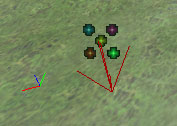
입자는 Draw Style 이 Alpha Blend 로 설정된 알파 텍스처를 사용합니다. 텍스처 자체의 중심부가 상당히 불투명하므로 시스템의 Opacity 를 20%로 낮추어 장면 전체가 하얗게 지워지지 않도록 했습니다. 또 입자들이 페이드인 하기도 하고 페이드 아웃 하기도 하지만, 생애의 대부분 동안은 페이드하지 않습니다. 입자들은 매우 큰 사이즈의 X와 Y (+/- 825 )를 가지고 있어서, 텍스처는 아주 넓은 지역을 커버합니다. 땅 안개 입자의 수명은 20초입니다. 이것은 모든 페이딩이 느리고 별로 눈에 띄지 않도록 합니다. 또 시스템의 Relative Warmup Time 과 Warmup Ticks Per Second 가 1로 설정되어 시스템의 워밍업을 눈치 채지 못할 정도입니다. 모든 모션도 아주 느려서 불규칙적이거나 갑작스러운 것이 하나도 없습니다. X와 Y의 Start Velocity 는 +/- 2.5, 그리고 Z velocity는 min=1, max=3.5로 설정했습니다. 입자들은 무작위 회전으로 출발하며 Spins Per Second 는 min=0.05, max=0.08입니다. 이 모든 것들이 결합하여 서서히 소용돌이 치고 포개지는 땅 안개를 형성합니다. 안개 입자 시스템을 만들 때 가장 큰 문제 가운데 하나는 오버드로입니다. (오버드로는 비디오 카드의 채움 비율에 의해 제한되는, 같은 픽셀이 그려지는 횟수를 말합니다) 이 시스템은 약간의 커다란 입자들을 사용하므로 겹쳐지는 부분이 별로 없기 때문에, 오버드로는 그다지 나쁘지 않습니다.
그래도 아직 적지 않은 오버드로가 남아 있으며, 입자 시스템으로 안개를 만드는 이들은 누구나 이 점을 인식해야 합니다.
Waterfall (폭포)
제작: Chris Linder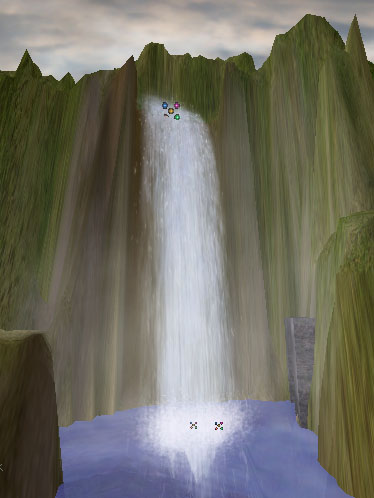
이 예는 상당히 복잡하며 또 렌더링 시간 면에서 다소 비싸게 먹힙니다. 동시에, 더 보기 좋고 거의 모든 시트 기반의 폭포 (비싸지 않게 폭포를 만드는 방법)보다 융통성이 많습니다. 여러분은 이 폭포의 정면에 있을 수도 있고, 옆면이나 뒷면에 있을 수도 있으며, 폭포를 통해 올려다볼 수도 있습니다.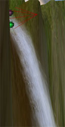

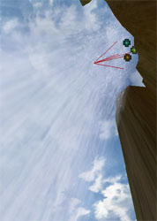
이 효과는 3개의 에미터로 구성되어 있습니다. 첫 번째 에미터는 폭포 자체이고, 두 번째 것은 폭포가 물의 표면에 닿는 바닥 부분, 그리고 세 번째 것은 폭포를 둘러싸고 있는 자욱한 안개입니다.폭포
폭포는 4개의 에미터로 구성되어 있습니다: 떨어지는 물덩어리를 만드는 'main water' 에미터; main water의 정면에 있고 그보다 덜 농밀하며, 여러 층과 여러 속도의 물의 모습을 보여주기 위해 보다 더 빠른 속도로 떨어지는 'fast water' 에미터; 폭포의 가장자리와 주변의 물방울 효과를 포착하는 'drops' 에미터; 그리고 측면에서 폭포를 볼 때 단지 얇은 시트처럼 보이지 않도록 하는 시스템인 'side water'입니다. 'main water'는 29개의 알파 스프라이트로 된 시스템입니다. 텍스처는 2x1 구획 텍스처이며 각 스프라이트에 대해 임의의 구획이 선택됩니다. Blend Between Subdivisions 를 하는 것이 ‘올바른’ 방법이지만, 어떤 이유에서인지 이것은 알파 또는 어떤 종류의 페이딩과도 작용하지 않습니다. 만일 텍스처가 내리막길에서 변경된다면 보기가 더 낫겠지만 페이딩이 보다 더 중요하기 때문에, 이것은 불편한 일입니다. 입자들은 양 끝에 알파 값을 하나씩 가지고 가운데에 두 개의 알파가 아닌 값을 가진 색상 척도로 페이드합니다. 페이딩 대신 이 방법을 사용한 것은, 색상 척도가 입자당 계산되는 반면 페이딩은 절대적 시간이기 때문입니다. 한 시점에서 저는 시스템을 여러가지의 입자 수명으로 테스트했기 때문에 이것이 필요했지만, 이제는 수명이 2.5초로 고정되었으므로 상관이 없습니다; 페이딩이 사용될 수도 있었습니다. 텍스처를 더 파랗게 하기 위해 Color Multiplier 로 살짝 색을 입혔습니다. 늦은 오후의 조명을 가진 레벨에 더 잘 맞는 것 같고, 또 시스템을 더 어둡게/그늘지게 하기 위해 파랑색이 사용되었습니다. 텍스처 자체는 꽤 크며 (256x512), 텍스처의 메모리를 절약하고 싶다면, 질을 크게 손상시키지 않고 크기를 줄일 수 있습니다. 텍스처는 순수한 흰색이 아니라는 점을 알아두는 것이 중요합니다. 텍스처의 색상에 변동이 없다면, 물이 매우 무미건조하고 미심쩍어 보입니다. 단지 약간의 색조가 물의 모습을 크게 향상시킵니다. 아래 이미지들은 위에서부터 텍스처의 RGB, 이의 알파 채널, 그리고 UnrealEd에서 보는 이 텍스처의 모습입니다 .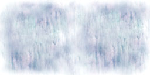

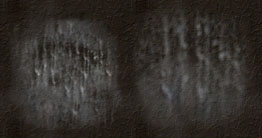
이 시스템은 액터에 맞춰 정렬되어 있어서, 환경에 일치하도록 쉽게 회전할 수 있습니다. 폭포의 넓이는 Start Location Box 의 Y 범위로 설정되었으며, 이 경우에는 약 +/- 133입니다. X와 Z은 둘 다 시작 위치에서 0입니다. 모든 입자들은 대개 밖을 향하고 (X = 242) 약간 아래로 향하는 (Z = -60), 같은 속도로 출발합니다. Acceleration 은 대략 Z = -800의 속도로 낮춰졌습니다. Facing Direction 이 Along Movement Facing Normal 이기 때문에, 입자들이 더 빠르게 떨어지고 이동함에 따라더 길어지고 좁아집니다. 점점 가늘어지는 것을 보충하기 위해, 크기 척도를 사용하여 입자들이 시간이 지나면서 더 커지도록 했습니다. 척도에서의 최종 크기가 시스템이 같은 넓이를 유지할 때까지 조정되었습니다. 이것은 또한 입자들이 떨어질 때 수직으로 더 많이 늘여지는 결과가 되어, 시각적으로 보기가 좋습니다. 입자들의 크기는 X와 Y가 거의 비슷하지만 아주 똑같지는 않은, X = +/-140 그리고 Y = +/-134로 시작했습니다. 입자들은 스핀하지 않습니다. Facing Direction 이 Along Movement Facing Normal 이어서 스핀하면 입자에 매우 이상한 영향을 주기 때문입니다. 'fast water' 는 'main water' 를 복제하고 General 에서 Scale Speed 도구를 사용하여 시스템을 더 빠르게 함으로써 만들어졌습니다. 그 다음 Start Location Offset 으로 에미터가 조금 위쪽 앞으로 이동되었습니다. 이 에미터에는 입자의 수가 더 적고 Start Size 도 약간 다릅니다. 또 Start Location Box 의 Y범위가 더 좁아서 (Y = +/- 100) 빠른 입자들이 가장자리에 보이지 않고 명백하게 한 개의 스프라이트처럼 보입니다. 'drops' 에미터도 'main water'를 복제하고 시스템을 더 빠르게 함으로써 만들어졌지만, 'fast water'만큼 빠르지는 않습니다. 텍스처가 다르고, 더 불투명한 많은 수의 작은 물방울을 가지고 있습니다. 이 시스템 또한 약간 조정된 Start Size 와 Start Location Box 를 가지고 있지만, 이 입자들은 소량의 스핀을 가지고 있다는 것이 주요 차이점입니다. 그러나 이 스핀은 Facing Direction 이 Along Movement Facing Normal 이기 때문에 스프라이트의 노멀에서 회전하지 않습니다; 이것들은 입자들을 위로 밖을 향해 튀어나오게 하는 다른 축에서 스핀합니다. 이는 폭포로부터의 무작위 물방울에 대해 매우 훌륭히 작용합니다. 이 입자들은 이제 더 이상 폭포 평면의 일부가 아니기 때문입니다. 'side water' 에미터도 'main water'의 복제이지만, Along Movement Facing Camera(움직임이 카메라를 향하는 방향을 따라) 의 Facing Direction 을 가집니다. 이것은 폭포가 옆에서 볼 때 멋있어 보이도록 하는 방법입니다. 이 Facing Direction 은 입자를 늘이지 않으므로 크기 척도는 에미터에서 제거되었습니다. Start Size 도 시스템이 측면으로부터 작용하고 정면으로부터의 시야에 너무 방해가 되지 않도록 크게 조정되었습니다. 옆에서는 보이지 않는 폭포를 다룰 경우에는 입자들을 저장하고 이 시스템을 무효화 하십시오.폭포 바닥 부분의 물튀김
폭포 바닥 부분에서의 물튀김은 2개의 에미터로 되어 있습니다. 하나는 main water의 물튀김용, 또 하나는 주 물튀김 가장자리에 있는 작은 물방울들용입니다. 이것은 물튀김 효과 전체가 한가운데가 아주 농밀한 아주 작은 물방울들로 이루어진 것처럼 보이도록 설계된 것입니다. main water의 물튀김 에미터는 무작위로 선택된 2 구획을 가진 빽빽한 텍스처를 사용합니다.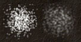
이 둘 사이를 블렌드하면 바람직하겠지만, 위에서 언급했듯이 이 블렌딩은 알파와는 작용하지 않습니다. 텍스처가 알파 텍스처이므로 바닥 부분의 물튀김을 옆에서 봤을 경우 더 밝아지지 않습니다. 만일 Draw Style 이 Translucent 나 Brighten 이었다면 더 밝아졌을 것입니다. 아래는 물방울 텍스처의 모습입니다:

같은 이유에서 구획과 Alpha Blend 를 사용했습니다. 물방을들이 훨씬 덜 농밀하면서 이 텍스처의 중심부에 뭉쳐져 있지 않습니다. 빽빽한 텍스처를 사용하는main 에미터는 44개의 입자를 사용하기 때문에 drops 에미터의 그것과 비교할 때 더 농밀합니다. 그러나 main 에미터는 40%의 Opacity 를 사용하므로, 시스템들이 더 균형이 잡히고 중심부가 하얗게 지워지는 일이 없습니다. main 텍스처와 drops 텍스처 사이의 또 하나 다른 점은 main 물튀김 입자들이 (size = 106)시스템에 있는 것들(size = 66)보다 크다는 점입니다 . 이 두 에미터가 모두 입자를 스핀하며, 무작위 회전으로 시작함으로써 물방울들을 보다 더 개별적으로 보이게 하고 보다 덜 많은 물방울로 된 단일 텍스처처럼 보이도록 합니다. 물방울들은 원래 볼륨이고 따라서 항상 카메라를 향하고 있는 것이 가장 이치에 맞기 때문에 Facing Camera 의 Facing Direction 이 사용되었습니다. 입자들을 폭포의 바닥 부분에 한 줄로 배치하기 위해 Start Location Box 가 사용되었습니다. 이 시스템은 Use Rotation From 이 Actor 로 설정되어 있으므로 세계에서 쉽게 회전되어 폭포 밑바닥 같은 것들과 일치할 수 있습니다. 입자들은 주로 Y축을 따라 (Y = +/- 155) 시작합니다. X 축에서의 시작은 (X = +/- 25)에 불과합니다. 수면 밑에서의 물튀김을 시작하기 위해서는 Start Location Offset (Z=-150)이 사용되었습니다. 페이드인은 수면 위에 입자의 일부만이 보일 때만 발생하기 때문입니다. 만일 입자가 완전히 수면 위에 있을 때 페이드인 하려고 하면, 더욱 더 한 개의 스프라이트가 나타나는 것처럼 보이게 되며, 이것은 이 시스템의 문제점입니다. 이 두 에미터의 입자들은 빠르게 위로(+Z) 그리고 약간 바깥쪽으로 (+/- Y) 이동하기 시작하며, 약간 앞쪽으로도 향합니다 (+X). 물방울들은 조금 더 빠르게 위로 이동하며 물튀김보다 훨씬 빠르게 바깥쪽으로 이동합니다. -Z 방향 (Z=-1260)에서의 Acceleration 이 이 입자들의 모션에서 큰 역할을 합니다. 입자들의 수명 은 모두 0.9초이며, 따라서 이것들은 페이드 아웃 하기 전에 속도를 늦추고 아래로 다시 떨어지는데 충분한 시간을 가지게 됩니다. 이 입자 시스템들의 페이딩은 아마 지나치게 복잡할지도 모릅니다. 입자들은 페이드인 하기 위해 알파를 가진 Color Scale 을 사용하고, 잠시동안 완전히 밝은 상태로 있은 다음 페이드 아웃 합니다. 페이드 아웃의 속도를 높이기 위해서 입자의 수명 마지막에 Fading 을 사용할 수도 있습니다. 이것은 Color Scale 페이드 아웃의 중간에 Fade-Out Start Time 을 설정하면 됩니다. 사실 Fading 만을 사용해도 괜찮아 보이겠지만, 두 가지의 서로 다른 페이딩 속도가 어떻게 함께 사용되는지 알아두는 것도 의미가 있을 것입니다.
자욱한 안개
이 시스템은 18개의 비교적 커다란, 아주 낮은 Opacity (0.13)의 알파 블렌드된 입자들로 이루어져 있습니다. 이 입자들은 임의의 회전으로 시작하여 상당히 느리게, 주로 위를 향하지만 앞쪽과 약간 양 바깥쪽을 향해서도 이동합니다. 이 입자들의 수명은 8초이며, 이는 거의 폭포의 중간 지점까지 떠오를 시간을 줍니다. 입자들은 0.63초 이내에 페이드하고, 최대의 불투명도로 2초보다 약간 더 머물다가 수명의 나머지동안 페이드 이웃 합니다. 페이드인이 빠른 것처럼 보일수도 있지만, 입자들이 입자 시스템 아래에서 Start Location Offset 100 (입자들을 물 밑에 있게 하는)으로 시작한다는 사실이 이를 감추어 줍니다. 이 시스템 역시 Use Rotaion From 이 Actor 로 설정되어, 쉽게 폭포에 맞추어 정렬될 수 있습니다.다운로드
아래의 링크에서 이 문서에 수록된 예제들의 콘텐츠를 함유하고 있는, 압축된 아카이브를 다운로드할 수 있습니다:- EM_ParticleSystems.zip (Unreal Engine 2 , 2226 빌드용)